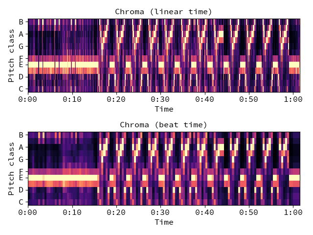
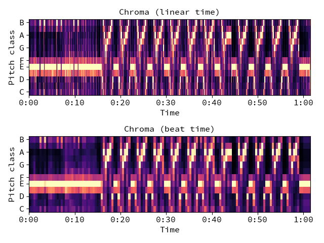

librosa.display.specshow¶
-
librosa.display.specshow(data, x_coords=None, y_coords=None, x_axis=None, y_axis=None, sr=22050, hop_length=512, fmin=None, fmax=None, bins_per_octave=12, **kwargs)[source]¶ Display a spectrogram/chromagram/cqt/etc.
Parameters: data : np.ndarray [shape=(d, n)]
Matrix to display (e.g., spectrogram)
sr : number > 0 [scalar]
Sample rate used to determine time scale in x-axis.
hop_length : int > 0 [scalar]
Hop length, also used to determine time scale in x-axis
x_axis : None or str
y_axis : None or str
Range for the x- and y-axes.
Valid types are:
- None, ‘none’, or ‘off’ : no axis decoration is displayed.
Frequency types:
- ‘linear’, ‘fft’, ‘hz’ : frequency range is determined by the FFT window and sampling rate.
- ‘log’ : the spectrum is displayed on a log scale.
- ‘mel’ : frequencies are determined by the mel scale.
- ‘cqt_hz’ : frequencies are determined by the CQT scale.
- ‘cqt_note’ : pitches are determined by the CQT scale.
All frequency types are plotted in units of Hz.
Categorical types:
- ‘chroma’ : pitches are determined by the chroma filters. Pitch classes are arranged at integer locations (0-11).
- ‘tonnetz’ : axes are labeled by Tonnetz dimensions (0-5)
- ‘frames’ : markers are shown as frame counts.
Time types:
- ‘time’ : markers are shown as milliseconds, seconds, minutes, or hours
- ‘lag’ : like time, but past the half-way point counts as negative values.
All time types are plotted in units of seconds.
Other:
- ‘tempo’ : markers are shown as beats-per-minute (BPM)
- using a logarithmic scale.
x_coords : np.ndarray [shape=data.shape[1]+1]
y_coords : np.ndarray [shape=data.shape[0]+1]
Optional positioning coordinates of the input data. These can be use to explicitly set the location of each element data[i, j], e.g., for displaying beat-synchronous features in natural time coordinates.
If not provided, they are inferred from x_axis and y_axis.
fmin : float > 0 [scalar] or None
Frequency of the lowest spectrogram bin. Used for Mel and CQT scales.
If y_axis is cqt_hz or cqt_note and fmin is not given, it is set by default to note_to_hz(‘C1’).
fmax : float > 0 [scalar] or None
Used for setting the Mel frequency scales
bins_per_octave : int > 0 [scalar]
Number of bins per octave. Used for CQT frequency scale.
kwargs : additional keyword arguments
Arguments passed through to
matplotlib.pyplot.pcolormesh.By default, the following options are set:
- rasterized=True
- shading=’flat’
- edgecolors=’None’
Returns: axes
The axis handle for the figure.
Examples
Visualize an STFT power spectrum
>>> import matplotlib.pyplot as plt >>> y, sr = librosa.load(librosa.util.example_audio_file()) >>> plt.figure(figsize=(12, 8))
>>> D = librosa.amplitude_to_db(librosa.stft(y), ref=np.max) >>> plt.subplot(4, 2, 1) >>> librosa.display.specshow(D, y_axis='linear') >>> plt.colorbar(format='%+2.0f dB') >>> plt.title('Linear-frequency power spectrogram')
Or on a logarithmic scale
>>> plt.subplot(4, 2, 2) >>> librosa.display.specshow(D, y_axis='log') >>> plt.colorbar(format='%+2.0f dB') >>> plt.title('Log-frequency power spectrogram')
Or use a CQT scale
>>> CQT = librosa.amplitude_to_db(librosa.cqt(y, sr=sr), ref=np.max) >>> plt.subplot(4, 2, 3) >>> librosa.display.specshow(CQT, y_axis='cqt_note') >>> plt.colorbar(format='%+2.0f dB') >>> plt.title('Constant-Q power spectrogram (note)')
>>> plt.subplot(4, 2, 4) >>> librosa.display.specshow(CQT, y_axis='cqt_hz') >>> plt.colorbar(format='%+2.0f dB') >>> plt.title('Constant-Q power spectrogram (Hz)')
Draw a chromagram with pitch classes
>>> C = librosa.feature.chroma_cqt(y=y, sr=sr) >>> plt.subplot(4, 2, 5) >>> librosa.display.specshow(C, y_axis='chroma') >>> plt.colorbar() >>> plt.title('Chromagram')
Force a grayscale colormap (white -> black)
>>> plt.subplot(4, 2, 6) >>> librosa.display.specshow(D, cmap='gray_r', y_axis='linear') >>> plt.colorbar(format='%+2.0f dB') >>> plt.title('Linear power spectrogram (grayscale)')
Draw time markers automatically
>>> plt.subplot(4, 2, 7) >>> librosa.display.specshow(D, x_axis='time', y_axis='log') >>> plt.colorbar(format='%+2.0f dB') >>> plt.title('Log power spectrogram')
Draw a tempogram with BPM markers
>>> plt.subplot(4, 2, 8) >>> Tgram = librosa.feature.tempogram(y=y, sr=sr) >>> librosa.display.specshow(Tgram, x_axis='time', y_axis='tempo') >>> plt.colorbar() >>> plt.title('Tempogram') >>> plt.tight_layout()
Draw beat-synchronous chroma in natural time
>>> plt.figure() >>> tempo, beat_f = librosa.beat.beat_track(y=y, sr=sr, trim=False) >>> beat_f = librosa.util.fix_frames(beat_f, x_max=C.shape[1]) >>> Csync = librosa.util.sync(C, beat_f, aggregate=np.median) >>> beat_t = librosa.frames_to_time(beat_f, sr=sr) >>> ax1 = plt.subplot(2,1,1) >>> librosa.display.specshow(C, y_axis='chroma', x_axis='time') >>> plt.title('Chroma (linear time)') >>> ax2 = plt.subplot(2,1,2, sharex=ax1) >>> librosa.display.specshow(Csync, y_axis='chroma', x_axis='time', ... x_coords=beat_t) >>> plt.title('Chroma (beat time)') >>> plt.tight_layout()
 
